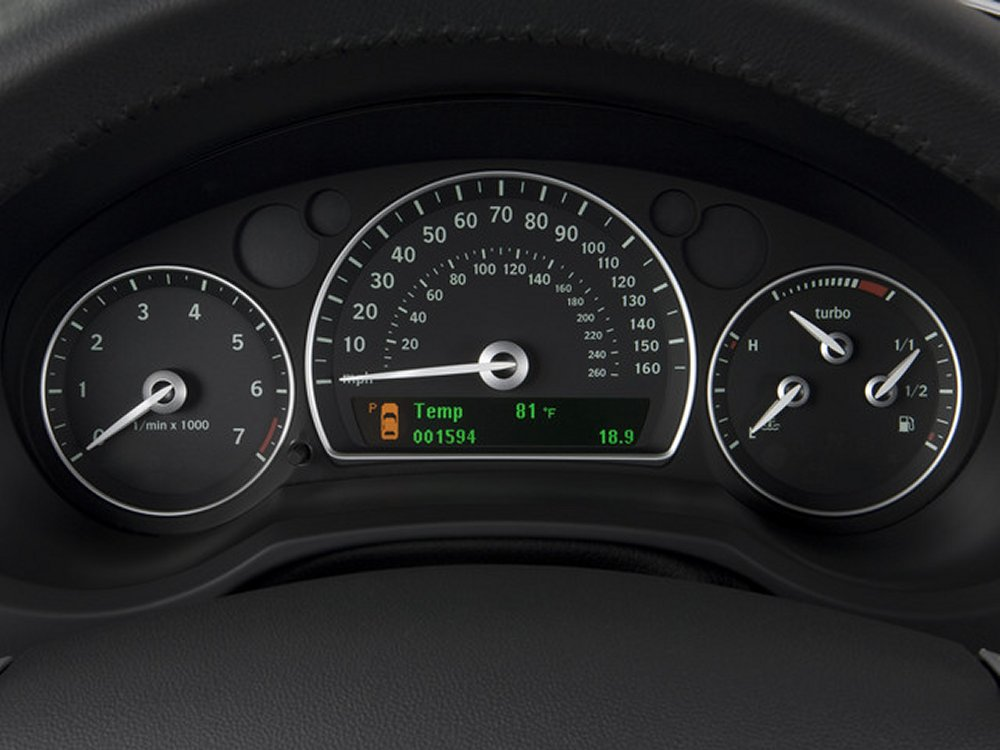
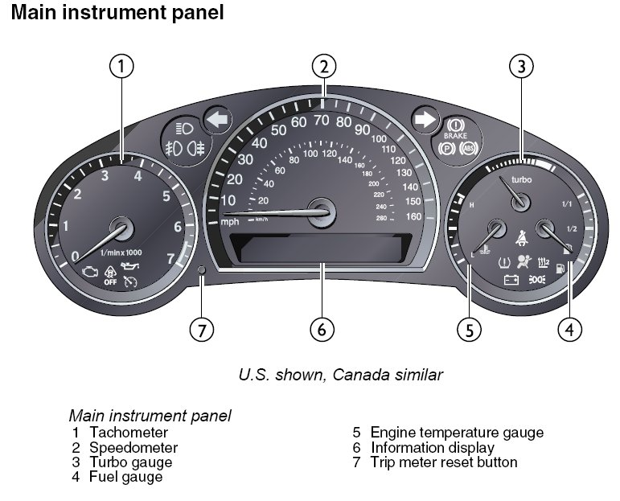
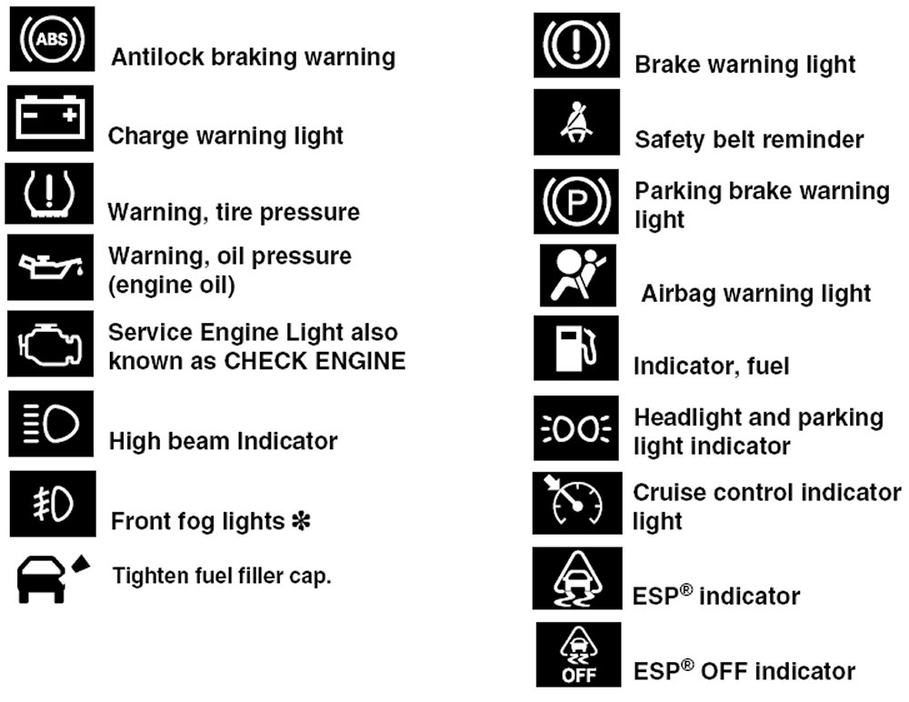
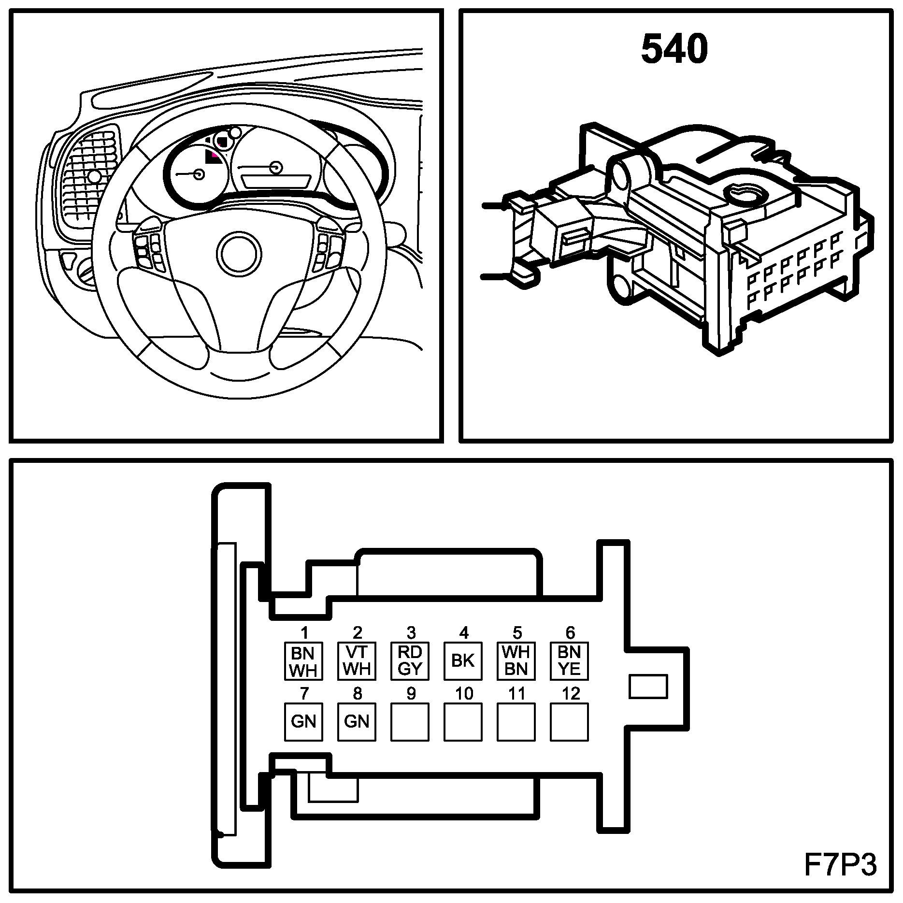

Instrument Cluster / Carrier: Locations
Main Instrument Display Panel (540)

- Main Instrument Panel (MIP)

- MIP Components

- MIP Warning Light and Indicators
Main Instrument Display Panel (540):

- Location: Opposite the driver in the dashboard